1Open the link github.com/BaNburger/AmbitiousEntrepreneurship
2Go to modules then 08-first-users
3Click the lecture PDF M08_Lecture_Finding-First-Users.pdf, download top right
Where we are · the course
From a verdict to the first euro
Thirteen sessions from first idea to first revenue. What teams have by now:
A live MVP people used Prototyping (M06)
A verdict: Go, Pivot or Kill The kill decision (M07)
An offer with a price and names The kill decision (M07)
Check-in · Show of hands
Go, Pivot or Kill. Did your line confirm it?
Pivot or persevere
Under your line? That is a decision, not a failure
Every verdict is progress, and every verdict sells today
Accountability
Three questions, every session
Chapter 1 of 9
Previously on Ambitious Entrepreneurship
Four pictures from earlier sessions that you need to follow today.
Previously · The kill decision (M07) · rung six
You tested at the wallet line
Previously · The kill decision (M07)
Your monkey was the unknown that could kill you
Previously · Prototyping (M06)
Your MVP is live. Now it needs customers
The user box still needs one who pays
Previously · Prototyping (M06)
Four questions before every build
Today's question · question 4
How can you get it in the hand of your customers?
Chapter 2 of 9
Your presentations
Each team confirms its verdict and names the offer and price it sells today.
Your presentations · make it credible
Show us where you're at in 3 minutes or less!
Facts
The monkey
In one sentence
Why it was the critical unknown
Numbers
Your Toolkit
People tested per student
The line next to its result
Scorecard total, weakest section
Quotes
The test
Two, with roles, not names
Images
The offer
Offer with its price
Kill Ritual page, if anything died
Verdict: confirmed or changed against the line, and a pivot's type
What did you do?What did you learn?How can we help?
Input 1 of 4 · Chapter 3 of 9
Do it by hand: things that don't scale
Get each first user by hand, set it up on the spot, deliver what's missing.
Input 1 of 4 · Do it by hand · three questions
Where do your first ten come from?
1
Where do your first ten customers come from?
2
What do you do on the call?
3
And if you killed your idea?
The most common unscalable thing founders have to do at the start is to recruit users manually.
Paul Graham, co-founder of Y Combinator
Essay
Do Things That Don't Scale
Paul Graham, July 2013
Do things that don't scale
Your first ten customers won't come from a tool
Founders get their first ten by hand, one person at a time
Do things that don't scale
Skip the sign-up link. Set it up while they watch
A yes without use is a yes you lose
"Great, I'll send you the sign-up link"
Their inbox"Later, maybe"Gone
"Got five minutes? Let's set it up now"
1Their own data in
2First outcome on screen
Used today
Make numbers go brrr · customers
Be their concierge. It's real revenue
Worked example · made up
Set up on the call, delivered by hand
Finalist Alert's first customer, step by step
On the call
Her three open roles go into the sheet while she watches
That evening
A founder checks the finalists' replies, by hand
Next morning
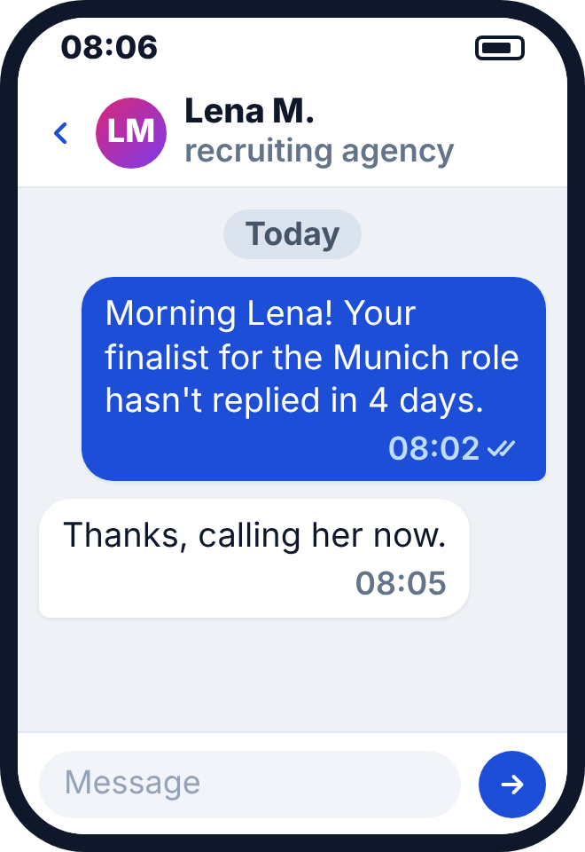
WhatsApp, sent by hand
€49 a month
Restart after a kill
Killed it? You still sell today
Now you · alone · 2 minutes
What will you do by hand from today?
Output
Three lines in your notes
Input 1 of 4 · Do it by hand · the answers
Do it by hand: set it up while they watch
1
Where do your first ten customers come from?
Not from a tool. Founders get them by hand, one by one
2
What do you do on the call?
Skip the sign-up link. Set it up while they watch, be their concierge
3
And if you killed your idea?
You still sell today, starting from what your weeks produced
Input 2 of 4 · Chapter 4 of 9
Sell it: like a founder
Switch from learning to selling, ask the right people, and never drop a thread.
Input 2 of 4 · Sell it · three questions
Who sells your first customers?
1
When do you switch from learning to selling?
2
Whom do you ask?
3
What happens after the first message?
Sell like a founder
You're in luck. You're not selling used cars!
As a founder, you are the first salesperson
Sales = structured conversations that turn interest into commitment
From discovery to sales
When the pattern repeats, start selling
Still 80% listening, 20% demo
Whom to ask
Ask people who pass all four
The Pain Map from Problem space (M03) already names who holds the budget
Whom to ask · B2B
In B2B, more than one person decides
Find the user, the champion and who pays
Ask your champion: "Who else has to say yes?"
Whom to ask · B2B
Ask someone who can sign your price
Signing limits at one large German corporate
Title
Can sign up to
What convinces them
CEO
€10 million
10-year vision, P&L impact
CXO
€1 million
P&L impact, competitive advantage
SVP or VP
€500,000
Revenue gains, cost efficiency
Director
€100,000
Cost efficiency in €
Head
€50,000
Product benefit
Manager
€1,000
Product benefit
Whom to ask
Friends open doors. Strangers pay
Start in your records, then one introduction away
Whom to ask · re-shown from Validating problems (M04)
Name the room, not the channel
Go where they already complain in public
Online communities · one named event
Offline places · a canteen
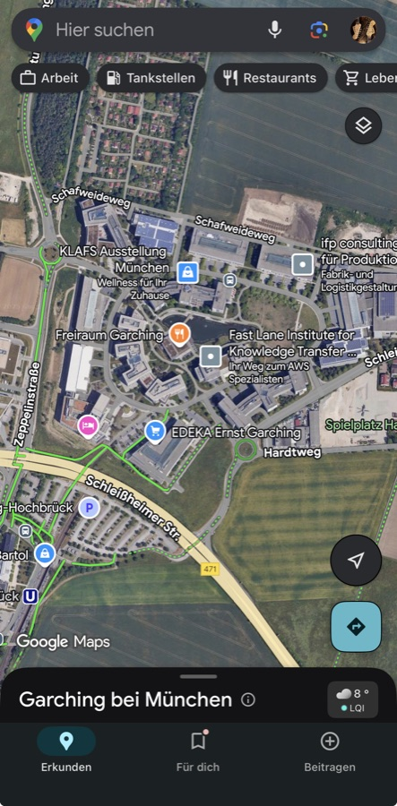
Now you · alone · 2 minutes
Name the first three you'll ask
Output
Three names
Outreach · 1 of 2
Write in their words. Ask for one next step
Under 75 words. Read it out loud first
LLena · agency recruiter · message
Hi Lena, in March you said "I lose a finalist every month and find out too late."1 We now flag that by WhatsApp, €49 a month2. Can I set it up with you Thursday at 10:30? 15 minutes.3
Hi! We're building an AI platform that revolutionises recruiting. Check out our website. Would you be interested?
1Their words
2Your price
3One next step
Outreach · 2 of 2
Give first, then ask
Never come empty-handed
@Email · "Two minutes, five warning signs"
Hi Lena, we interviewed 14 recruiters about finalists who drop out. Here are the five warning signs they named.1 If you like, I'll watch your current finalists for them. Thursday 10:30?2
Attachment · one page5 warning signs before a finalist drops outWhat 14 recruiters told us
1The gift, before the ask
2Then one next step
Check before you send
As a rule of thumb, 1 high-quality lead is worth about
10–50low-quality leads
Passes all four? Their words? One next step?
The call
Prepare five minutes. Listen for the rest
Then ask for one next step
Sell like a founder
Never, never drop the thread!
Follow up three or four times, until yes or no
Pipeline · Student Toolkit · made up
Person (name)
Channel
Touches (dates)
Next follow-up
Reply
Offer and price asked
Answer
Paid on
Recruiter, Berlin
Demo user
Mon
yes
€49 a month
paid
Wed
Lena, agency
Demo user
Mon, Thu
next Mon
yes
€49 a month
later
HR lead, 40 staff
Introduction
Tue
next Fri
none
Recruiter, Hamburg
Meetup
Mon, Wed
no
€49 a month
no
Input 2 of 4 · Sell it · the answers
Sell it: you are the first salesperson
1
When do you switch from learning to selling?
When the pattern repeats. Still 80% listening, 20% demo
2
Whom do you ask?
People who pass all four checks and can sign your price. Strangers pay
3
What happens after the first message?
You follow up three or four times, until yes or no
Input 3 of 4 · Chapter 5 of 9
Count it: make the numbers go brrr
Count every step from stranger to activated user, then double down on what works.
Input 3 of 4 · Count it · three questions
What do you count?
1
What do you count?
2
How do you push each stage?
3
When do you double down?
Make numbers go brrr
Every step loses most of the people
Bastian's example, 47,060 impressions to 5 customers
Make numbers go brrr
Count people, not page views
Reached, replied, talked, activated, paid
Make numbers go brrr · today's session on one page
Push every stage with its own tool
Make numbers go brrr
Start the flywheel and keep it going!
When you need the attention, it's way too late to start
Worked example · made up
Count every step, per channel
Finalist Alert's first week, four channels
Make numbers go brrr
Double down where activated users come from
2x the input. More than 2x the outcome?
Where visits come from
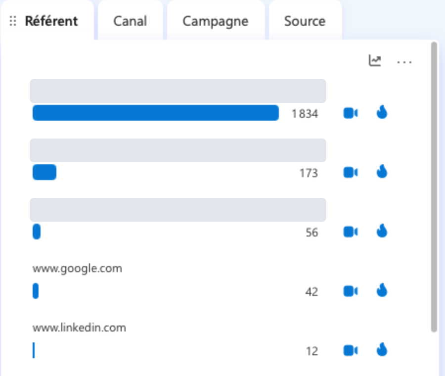
Activated users per channel · made up
Then measure again
Make numbers go brrr
Once a channel works, reach 100 people through it
Then 1,000, then tests on your own site
Now you · pairs · 2 minutes
Where do most of your people drop?
Input 3 of 4 · Count it · the answers
Count it: people, per step, per channel
1
What do you count?
People, not page views: reached, replied, talked, activated, paid
2
How do you push each stage?
Each stage with its own tool. Start the flywheel before you need it
3
When do you double down?
Where your activated users come from. Then reach 100 people through it
Input 4 of 4 · Chapter 6 of 9
Charge for it: ask for money today
Ask at your offer's price, take the payment on the spot, log every objection.
Input 4 of 4 · Charge for it · three questions
When do you ask for money?
1
Why ask for money now?
2
How do you ask?
3
What counts as a payment?
Mantra · re-shown from Validating problems (M04)
Real validation comes through the credit card
Ask for money today
Customers pay. Everyone else is a fan
Fans are lovely and pay no rent
Ask for money today · research
"I'd pay for that" is not a payment
Stated values ran a median 1.35 times real ones
"I'd pay $X for that." Hypothetical money isn't real. Ask for a pre-order.
Ask for money today · research
Zero is a special price
One cent less, and the choices flipped
The ask
Ask today, at your offer's price
Name the price, send the link, stay quiet
This would really help us.
It's €49 a month. I can set it up now and send you the payment link while we talk. Shall we?
… and then stop talking
Not an ask
"Would you pay for something like this?"
"We launch soon. Can I add you to the list?"
Live demo · Stripe Payment Link · sandbox
Step 1: Create the product and its price
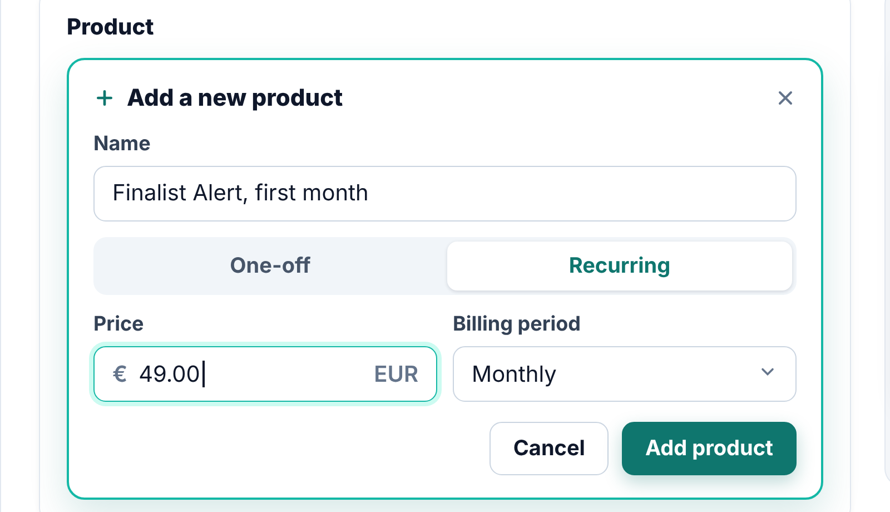
1
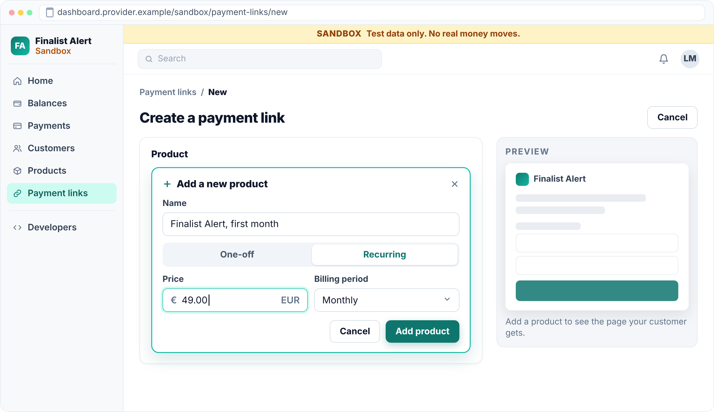
1Create the product and its price
2Create the link
3Send it while you're still talking
4See the payment arrive
Sandbox first. No real money moves.
Live demo · Stripe Payment Link · sandbox
Step 2: Create the link
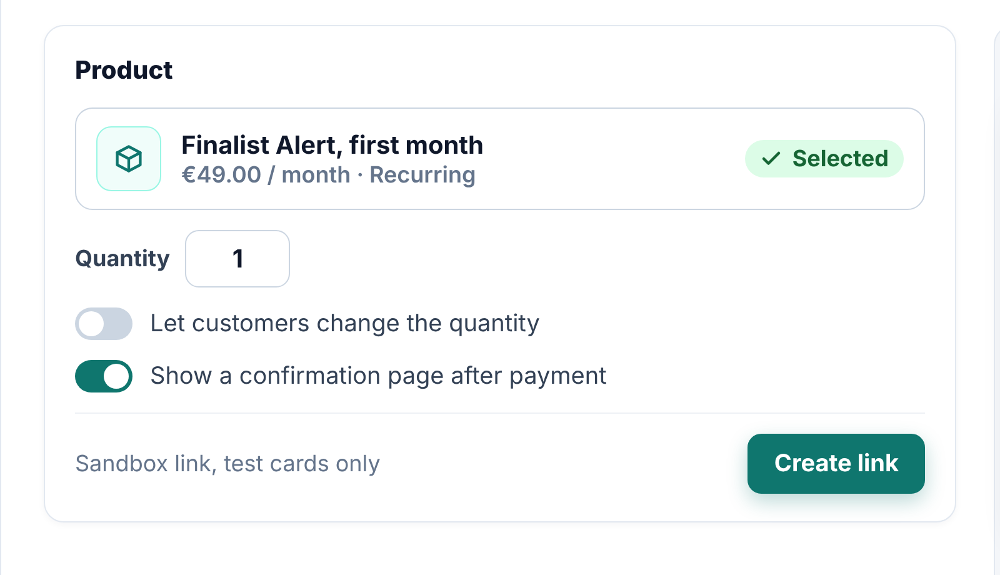
2
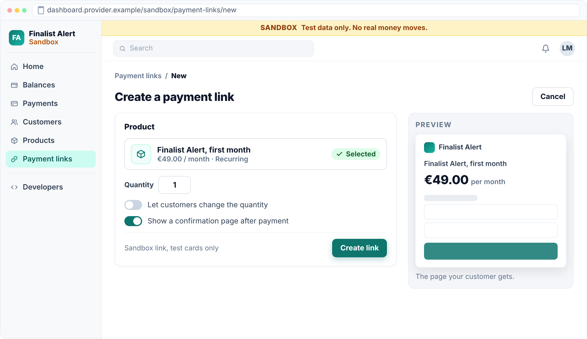
1Create the product and its price
2Create the link
3Send it while you're still talking
4See the payment arrive
One shared team account, never a private one.
Live demo · Stripe Payment Link · sandbox
Step 3: Send it while you're still talking
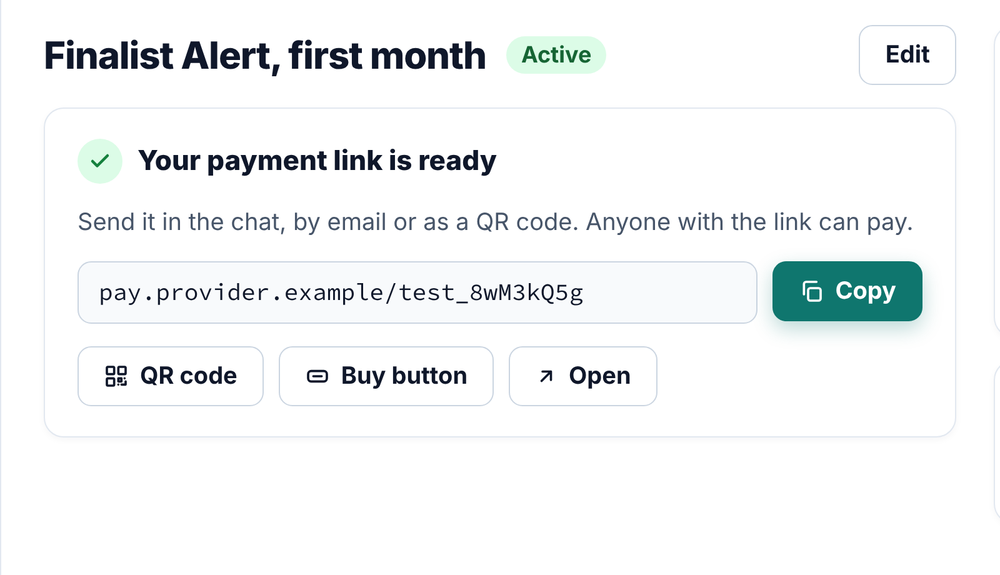
3
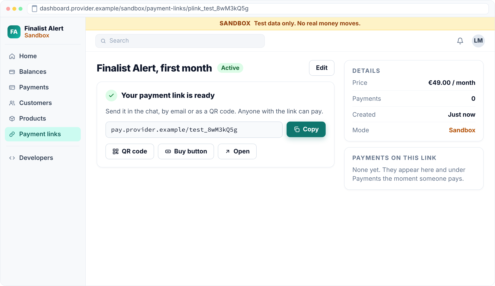
1Create the product and its price
2Create the link
3Send it while you're still talking
4See the payment arrive
Paste it into the chat. Then stop talking.
Live demo · Stripe Payment Link · sandbox
Step 4: See the payment arrive
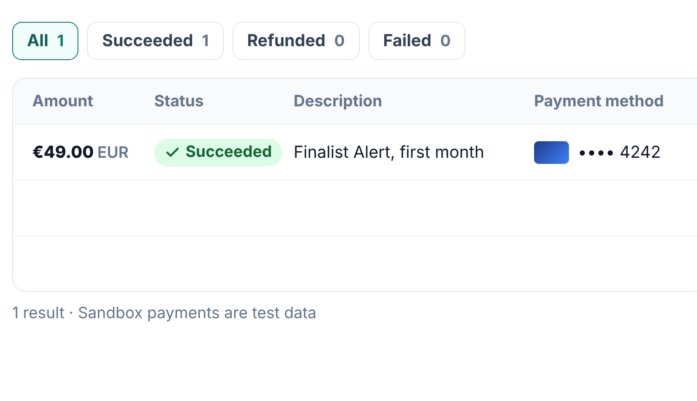
4
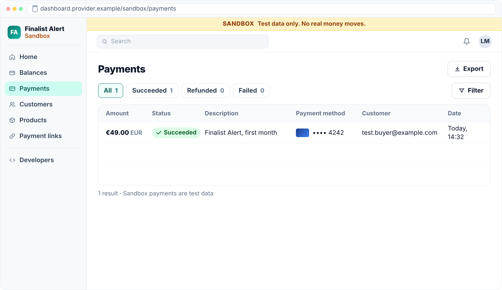
1Create the product and its price
2Create the link
3Send it while you're still talking
4See the payment arrive
Crop customer data out of your proof.
Ask for money today
B2B often pays by invoice. Number it from 001
Paid, a numbered invoice counts like a link
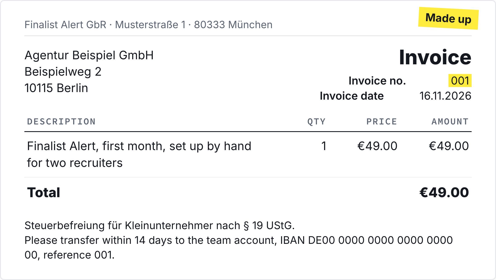
The number makes it proof. Count from 001.
Bigger B2B deals add two things: a signed contract, and the ink is dry.
Ask for money today
Log every no, word for word
Heard three times? Change the offer or the product
Ask for money today
Count only payments from outside your social graph
Any amount counts. Friends' money never does
Now you · pairs in your team · 2 minutes
Say your price sentence out loud
Output
Your price sentence
Input 4 of 4 · Charge for it · the answers
Charge for it: name the price, then stay quiet
1
Why ask for money now?
Customers pay, everyone else is a fan. "I'd pay for that" is no payment
2
How do you ask?
Today, at your offer's price: name it, send the link, stay quiet
3
What counts as a payment?
Any amount from outside your social graph. A paid, numbered invoice counts too
Chapter 7 of 9
Wrap-up and check-out
Two pictures to keep, three questions to reflect on, and your week.
Recap · today
Be their concierge, then count people up to paid
Per channel, not page views
Recap · rung six
From today you climb to the wallet
Reflection 1 of 3 · the content
What could you apply?
🛠️
What could you apply?
🤕
What gave you a hard time?
Reflection 2 of 3 · the process
Man vs. machine
🤖
Where did AI actually help you?
🧠
Where was your genius needed?
🕴️
What are your best hacks to share?
Reflection 3 of 3 · the results
Rose, thorn, bud
🌹
What was the breakthrough today?
🌵
What was the hardest part today?
🌱
What is an idea/feature you didn't have time to finish, but want to explore later?
Homework until next time
Ask named people from your segment to pay for your offer at its price, and win 3 paying users from outside your social graph, shown in your payment dashboard or on a numbered invoice.
3paying users
The learning floor is your first € from outside your social graph.
"If none of the first 10 people from our segment we ask to pay says yes by [midweek date], we change the offer or the segment before the next ask. No yes from fewer than 10 asks crosses it too." Logged before the first ask, counted across the team.
Homework · how to do it
Set up payment first. Then ask and follow up
1
Set up a way to get paid first, a team payment link (Team Stack, section 2) or an invoice from 001 (Legal Basics, section 4).
2
Start in your records, The ten from The kill decision (M07) first. Ask every buyer and every no for names. Then your segment's groups, found by AI research.
4
Get them on a call. Listen 80% of the time. Record only with consent.
5
Ask for the money there, at your price. Send the link while you talk.
Watch out. "Would you pay?" is not an ask. A favour discount is not a sale.
6
Set it up for them on the spot. Do by hand what the product can't.
7
Follow up until yes or no. Date every open thread. Log objections word for word.
Homework · what you come back with
Good is paid by strangers
GOOD
WEAK
Asks
18 recruiters asked on calls, €49
40 cold messages
Customers
3 by link, 1 by invoice, all strangers
An aunt paid "to help"
Next
Demo users convert, cold LinkedIn doesn't
"Everyone loved it"
References · 1 of 2
Sources in this deck
Aulet, B. (2013). Disciplined entrepreneurship: 24 steps to a successful startup. Wiley. Decision-making unit as summarised on d-eship.com.
Covey, S. R. (1989). The 7 habits of highly effective people. Free Press. Habit 5, franklincovey.com.
Fisher, R., & Ury, W. (1981). Getting to yes: Negotiating agreement without giving in. Houghton Mifflin.
Graham, P. (2013, July). Do things that don't scale. paulgraham.com/ds.html
Kolysh, M. (2026, June 22). How to get your first 10 customers [Video]. Y Combinator, YC Startup Library.
Murphy, J. J., Allen, P. G., Stevens, T. H., & Weatherhead, D. (2005). A meta-analysis of hypothetical bias in stated preference valuation. Environmental and Resource Economics, 30(3), 313–325.
References · 2 of 2
Sources in this deck
Shampanier, K., Mazar, N., & Ariely, D. (2007). Zero as a special price: The true value of free products. Marketing Science, 26(6), 742–757.
Stripe. (2026). Payment Links and Testing documentation. docs.stripe.com, accessed 20 October 2026.
Weger, H., Castle Bell, G., Minei, E. M., & Robinson, M. C. (2014). The relative effectiveness of active listening in initial interactions. International Journal of Listening, 28(1), 13–31.
No offer or names? Price a concierge offer, what you'd do by hand for one person. Name ten from your interviews and your segment's groups. Ask.
Homework until next time
Ask named people from your segment to pay for your offer at its price, and win 3 paying users from outside your social graph, shown in your payment dashboard or on a numbered invoice.
3paying users
The learning floor is your first € from outside your social graph.
"If none of the first 10 people from our segment we ask to pay says yes by [midweek date], we change the offer or the segment before the next ask. No yes from fewer than 10 asks crosses it too." Logged before the first ask, counted across the team.
Go sell. See you with your first customers!
Module 08 · Finding First Users · Case discussion · about 90 minutes
Case discussion
Who are your first ten customers — by name?
Course path
00
01
02
03
04
05
06
07
08
09
10
11
12
Module 08 · Case discussion
Tacto: The First Customers
Late September 2020 in Munich, with funding, a website and no customer on record.
Vote 1 · hands or poll
What should Tacto ask its first customers for?
Case · timeline
From a start in early 2020 to a website with no customer
Date
Event
Early 2020
The founders start and talk with a wide range of Mittelstand firms, by Petry's account of 2023
16 July 2020
Entered in the commercial register as Tactum Technology GmbH, share capital €25,002
Mid-2020
First financing round, by Petry's account of 2023
22 August 2020
Name Tacto Technology GmbH, share capital €30,165
7 September 2020
deutsche-startups.de reports the investment by Visionaries Club and UVC Partners, amount not disclosed
23 September 2020
First archived capture of tacto.ai, no product, no price, no customer on the site
Case · Exhibit 2
What tacto.ai showed on 23 September 2020
Page
What it said, verbatim
Home, promise
"We support procurement teams to focus on what matters by automating what does not."
Home, call to action
"Interested in what we are building? Get in touch via hello@tacto.ai"
About, investors
Visionaries Club, "a Berlin-based early stage VC fund backed by leading European digital founders and family business entrepreneurs". UVC Partners, offering "strategic and operational support, as well as access to a vast network of corporate partners, experienced industry experts and international follow-on investors"
About, business angels
"Hanno Renner (Co-Founder Personio), Johannes Reck (Co-Founder GetYourGuide), Torsten Reil (Co-Founder NaturalMotion), and Michael Wax (Co-Founder Forto)"


![The Pipeline sheet of the Student Toolkit for the synthetic team TurbineTrack, columns date, role, objection word for word and objection category. Ten rows, such as 28.04, owner, 6 techs, quote: 400 euros for software we might not keep? I pay per use, not upfront, price structure, and 06.05, owner, 20 techs, quote: per-tech pricing punishes me for growing, price structure, both chips in the same colour. Row 12 is ringed: 07.05, ops lead, 11 techs, quote: can it work offline? Third time asked, product or constraint, with a note: heard 3 times, Markus in an interview, a question in a demo, now here. Into the build](media/m08-objections.png)